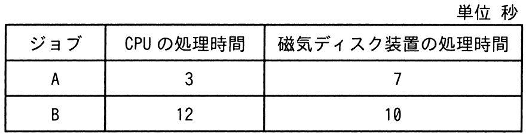
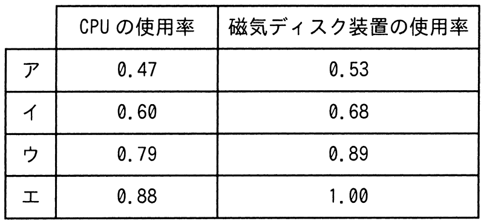

CPUと磁気ディスク装置で構成されるシステムで，表に示すジョブA，Bを実行する。この二つのジョブが実行を終了するまでのCPUの使用率と磁気ディスク装置の使用率との組合せのうち，適切なものはどれか。ここで，ジョブA，Bはシステムの動作開始時点ではいずれも実行可能状態にあり，A，Bの順で実行される。CPU及び磁気ディスク装置は，ともに一つの要求だけを発生順に処理する。ジョブA，Bとも，CPUの処理を終了した後，磁気ディスク装置の処理を実行する。

